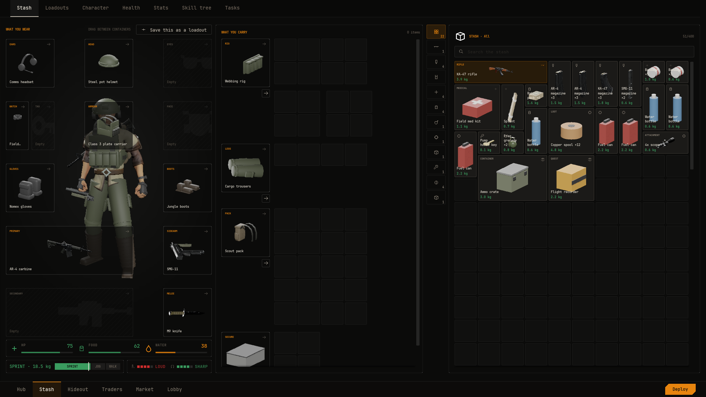

Equipment
An item is worn when its definition names an equip slot and the player puts it there. This guide covers the slots, every way to equip and unequip, how worn gear shows on the character, and how Kit up wears a whole loadout at once.

Equip slots#
Slots are gameplay tags that ship with the plugin, under NVS.View.Slot:
Head Ears Eyes Face Armour Rig Pack Secure Medical Legs
Primary Sidearm Secondary Melee Watch Tag Gloves Boots
Belt1 to Belt10To make an item wearable, open its Item Definition and set Equip Slot on its type. Weapon, Armour, Container and Gear have the field. Each item fits exactly one slot, and each slot holds one item.
- Weapon
Primary,Secondary,SidearmorMelee.- Armour
Armourfor a plate carrier,Headfor a helmet.- Container
Pack,RigorSecure. A worn container's grids appear beside the doll. See Containers.- Gear
- Anything else worn, such as
Earsfor a headset,Gloves,Legsfor trousers,BootsorWatch.
The doll's tiles#
The paper doll (W_PaperDoll) lays its tiles out from its Tiles table, in three columns with the middle one left clear for the figure. It ships with tiles for Ears, Head, Eyes, Armour, Face, Watch (sharing a cell with Tag), Gloves, Boots, Primary, Sidearm, Secondary and Melee. Pack, Rig and Secure show as container blocks beside the grids instead.
The other slots, such as Legs, Medical and the belt slots, hold items and show them on the character, but have no tile on the shipped doll. To give one a tile, add a row to Tiles in your own copy of the doll. Each row is a Slot Id (the last part of the tag, such as Legs), a Column, a Row, a Span of one or two columns, and an optional Paired With for two slots sharing one cell.
Equip and unequip#
All of these work out of the box when the player's pawn has an Inventory component.
- Alt-click a tile
- Equips it in its slot.
- Equip row
- The item menu's Equip · SLOT row. Greyed out when the slot is already taken.
- Drag onto the doll
- Drop the tile on its slot's tile, or on an empty container block for a pack, rig or secure case.
- Inspect window button
- The main button reads Equip · SLOT for an item that can be worn.
Equipping never swaps. The slot must be the one the item's type names, and it must be empty. Take off what is there first, or use Kit up, which does swap.
- E
- Hover a worn item and press E to take it off into the stash.
- Ctrl-click a worn item
- Takes it off into the stash.
- Unequip row
- The item menu's Unequip row. Greyed out when the stash has no room.
- Drag off the doll
- Drag a filled slot or a worn block onto any grid. The item lands at that cell.
Fixed items cannot come off. On the stash screen the pockets and the secure case are fixed.
From Blueprint#
The Inventory component has the same calls, so your own game code can dress the player:
- Equip Item(Instance Id, Slot)
- Wears an entry in the slot its type names. False if the slot is wrong or taken.
- Unequip Item(Slot, Container)
- Takes off what the slot holds into the first free cell of the container, or of any base container when Container is None.
- Get Equipped(Slot)
- The entry worn in a slot, or false when it is empty.
- Attach Item(Instance Id, Host Instance, Slot)
- Fits an attachment to one of a weapon's attachment slots. See Weapons.
Worn gear on the character#
The figure on the doll, on the character screen and in the world wears what the player has equipped. Where each item sits while worn is set on its Item Definition under Type. Only the wearable types have these fields: Weapon, Armour, Gear and Container.
- Worn On
- The bone or socket of the body its Look mesh hangs from, such as
Headfor a helmet,spine_03for a rifle on the back orthigh_rfor the SMG. - Worn Offset
- Location, rotation and scale relative to that bone.
Leave Worn On as None and the item shows nothing on the body, with one exception. A Gear, Armour or Container item whose Look has only a Skeletal Mesh follows the body's pose like clothing. A weapon always needs a bone.
Gear made of several meshes works best as one mesh with a material slot for each colour. The demo's plate carrier is one mesh on spine_03. Its cargo trousers, boots and gloves are Ranger skeletal meshes with no Worn On, so they follow the body. See Character looks.
A weapon worn on a bone, such as a rifle slung across the back, brings whatever is fitted to it, such as a scope or a magazine.
To dress the character in your level with the same gear, see Character looks. For the gun in the player's hands, Show Held Item on NVS View Look Library puts a held entry, with everything fitted to it, on a static mesh component.
Kit up from a loadout#
A Loadout Definition is a named kit: what is worn, what is fitted to the guns and what is packed where. The loadout screen lists every one.
- Create the asset Make a Data Asset of class
Loadout Definition. Set Display Name and Description, the line under the name in the library. - Fill Items Each row is a starting item row: Equip Slot to wear it, Fitted To Slot to fit it to a worn gun, or Packed In Slot and Packed Grid to pack it into a worn bag or a rig pouch. See Starting items.
- Validate The asset flags packed items with nothing worn to go in, and items too big for the grid they name.
When the player presses Kit up, the Inventory component wears, fits and packs the kit from what the player owns in the stash. Worn pieces go on first. Whatever was in a slot goes back to the stash to make room. A toast then says "Everything came out of your stash." or how many pieces were not there.

From Blueprint, call Kit Up on the Inventory component with a Loadout Definition. It returns how many pieces were missing.
Result#
Give a helmet definition Equip Slot NVS.View.Slot.Head and Worn On set to the Head bone, and put one in the player's stash. Alt-click it on the stash screen. The Head tile fills with the helmet's picture and the figure puts it on. Press E while hovering it and it goes back to the stash.